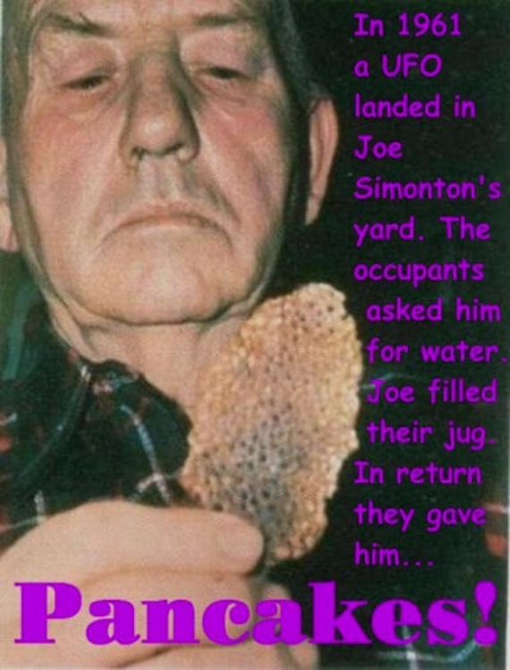

Explain why absurdities occur frequently in the UFO phenomenon.

Preface
- ExoAcademian(Darren) explains the case of the title. - ExoAcademian(Darren) has scoured Jacques Vallee's old and new writings to organize and elaborate on Jacques Vallee's views on the absurdity that accompanies the UFO case. - The "Joe Simonton's UFO Encounter" is taken as a specific example.Summary
- 29:00 He relates the absurdity of the UFO phenomenon to Zen koans (of the "one-handed sound" variety). 28:01 often have the deep poetic and paradoxical quality of eastern religious 28:06 tales unquote in a 1978 interview with fate magazine 28:12 he described this further saying quote if you're trying to express something which is beyond the comprehension of a 28:18 subject you have to do it through statements that appear contradictory or seem absurd 28:25 for example in zen buddhism the seeker must deal with such concepts as quote 28:30 the sound of one hand clapping unquote an apparently preposterous notion which 28:36 is designed to break down ordinary ways of thinking unquote so again the point here is this is 28:43 pointing towards some sort of metallogical device that when the way we think about the 28:48 world itself is the problem perhaps absurdity would be used as a kind of koan move to break us out of 28:55 that thinking to open up intuitive ways of seeing reality differently and perhaps more directly now elsewhere valley has also spoken 31:40 about the absurdity as part of his control system hypothesis specifically 31:45 that you could use absurdity to change the course of human history on an 31:50 unconscious level but that's where you sort of lever the change and you could do that right underneath the noses of - Being absurd can work to one's advantage in new religions and cults. 32:09 valet has made to that effect in his book messengers of deception quote the 32:14 social sciences have not yet achieved an understanding of the process by which new religious experiences arise and new 32:22 sects become influential churches also revolutionary cultural changes 32:28 often appear at first as the ufo sects do today to be irrational absurd and 32:34 contemptible unquote he also said quote the new belief is completely lacking in 32:40 logic that is the key to its power it serves to keep scientists away the more 32:47 absurd the statement the stronger its effect when the establishment is rational the irrationality is dynamite 32:55 unquote this is a 33:36 really insightful point that valet is making about how absurdity can become a 33:41 subversive means to control an entire populaceVideo (36:53)
Unreasonable Encounters: Elements of Absurdity in the Historical UFO PhenomenonMy view 1
- Both Jacques Vallee and the ExoAcademian (Darren), who speaks highly of Jacques Vallee and relies on his views, are reading too much into it...that's my view. - There is no deep reason why UFO phenomena are frequently accompanied by absurdity. Since the UFO phenomenon was originally a byproduct of a special disorder of consciousness (caused by EMF anomalies, etc.), it is only natural that it should appear absurd from the perspective of a healthy consciousness. It is the same as the absurdity of dreams one has in the middle of the night.My view 2
- By the way, a Zen koan has no meaning. - Zen koans have the (undesirable) side effect (*1) of damaging parts of the practitioner's brain that can easily lead to artificial disorientation if the practitioner continues to devote himself to them. - As a byproduct of this disturbance of consciousness, extraordinary experiences of consciousness are induced, such as small enlightenment, sometimes great enlightenment, and eventually nirvana. - Because it is a byproduct of disorientation, great enlightenment or nirvana has nothing to do with truth in any sense, not even spiritual awakening. Rather, they are the opposite of truth and spiritual awakening. Therefore, enlightenment and nirvana have no value. - In the first place, it is absurd to think that if one sits silently and attains a state of "no thoughts and no feelings" (or if one does all one's best "dhyana"), he or she will be able to experience the truth of the universe, or that spiritual awakening will occur. For more than 2,500 years, people have been seduced by this nonsense. - These are my guesses. Perhaps those who are astute enough to notice the stench of Zen's ramblings would have vaguely guessed it, but they would have been afraid to gut it so clearly and avoided it.(*1)
If so, then a prolonged devotion to a grueling religious asceticism, a Zen koan (*2), can be seen as an act of self-induced permanent (i.e., irreversible) physical and physiological transformation of a specific part of one's brain. - In this aspect, the abductee/contactee and the harsh religious practitioner or Zen practitioner are in the same category. ... - For example, the following famous phrase is found at the beginning of "Mumonkan".(2022-07-10)Use your three hundred sixty bones and joints and your eighty four thousand hair follicles throughout your body to start up a single mass of doubt to meet this single word “Not.” Daytime and nighttime lift up and tear. Do not establish an association between nothingness and “Not.” Do not establish an association between "Is" and “Not.” Examine this as if you swallowed a single hot iron ball and vomiting and vomiting doesn’t get it out.- If you seriously practice for years as this phrase suggests, it is quite predictable that your brain will be transformed as per the findings of cerebral physiology. ref: Hypothesis: "Why serious frustration and despair cause shamanic awakening experiences" and its deep relationship to UFO/abduction phenomena
Thanks
- Translated with www.DeepL.com/Translator (free version)
(2022-08-13 translate)
First published article (Japanese)
Jacques Vallee : UFO 事例の著しい不条理性をどう捉えるべきか (2022-07-10)